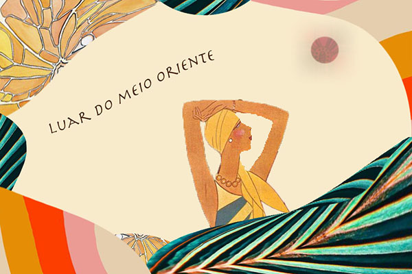

This graphic was made as part of a selfie based project we were assigned. As I am not a huge selfie fan, I opted to find a figure from a 1920’s magazine illustration and add some more levels of visual intrigue on top of it. This was my favorite project I completed although it was labor intensive. I wanted it to have a rich, desert-y feel and for the colors to be simultaneously exciting and relaxing.